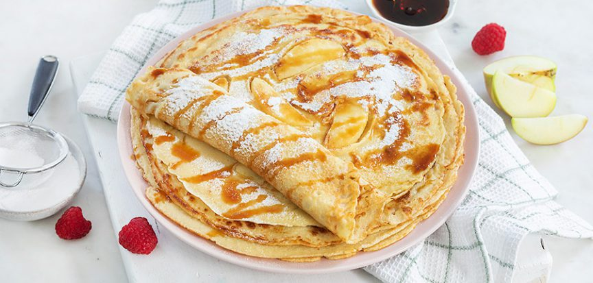

Pannenkoeken

Ingrediënten (voor 1 persoon)
- 20,83g zelfrijzende bloem
- 0,42dl melk (en eventueel wat extra)
- 1/4 eieren
- 0,08 zakje vannillesuiker
Bereiding
- Zeef de bloem met de vanillesuiker. Maak in het midden een kuiltje, breek daarin de eieren. Roer alles door elkaar met een garde.
- Schenk er in een straaltje 300 ml melk bij. Bewerk tot een glad mengsel.
- Klop dan de rest van de melk door het beslag zodat het lichter wordt. Vind je het beslag nog te dik, voeg dan eventueel nog wat extra melk toe (in totaal heb je 500 à 600 ml melk nodig).
- Bak de pannenkoeken in een grote koekenpan, in hete boter of olie.